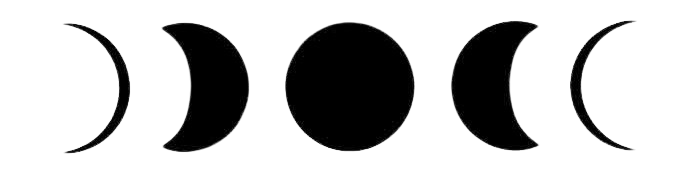

Moon Phases
In witchcraft, the moon is considered a powerful and influential celestial body, and its different phases are believed to have varying energies that can affect magical workings.
Witches often align their magical activities with specific moon phases to enhance the effectiveness of their spells. It's essential to note that these associations can vary among different traditions and individual practitioners. Additionally, personal intuition and intention play a crucial role in determining the optimal timing for magical
Here's a brief overview of how the four main moon phases are commonly interpreted in the Wiccan tradition:
New Moon:
The new moon is a time for new beginnings, fresh starts, and setting intentions. It's a period of introspection, planning, and planting the seeds of what you wish to manifest in the coming lunar cycle.
Waxing Crescent:
As the moon is waxing or growing, this phase is associated with the expansion of projects and goals. It's a time for building energy, making decisions, and taking the initial steps toward your intentions.
Full Moon:
The full moon is a time of heightened energy and magical power. It's ideal for rituals, spellwork, and divination. Full moons are often associated with the peak of the lunar cycle, and practitioners may focus on manifestation, clarity, and achieving goals.
Waning Crescent:
As the moon wanes or decreases in size, this phase is associated with releasing, banishing, and letting go. It's a time for shedding what no longer serves you, breaking bad habits, and clearing away obstacles in preparation for the next lunar cycle.
